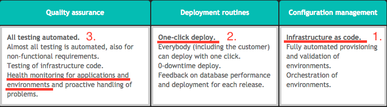
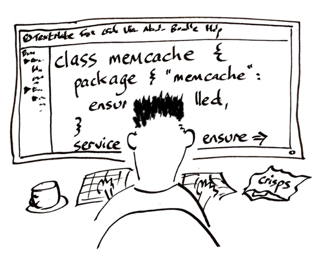
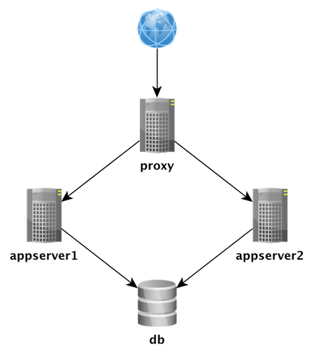
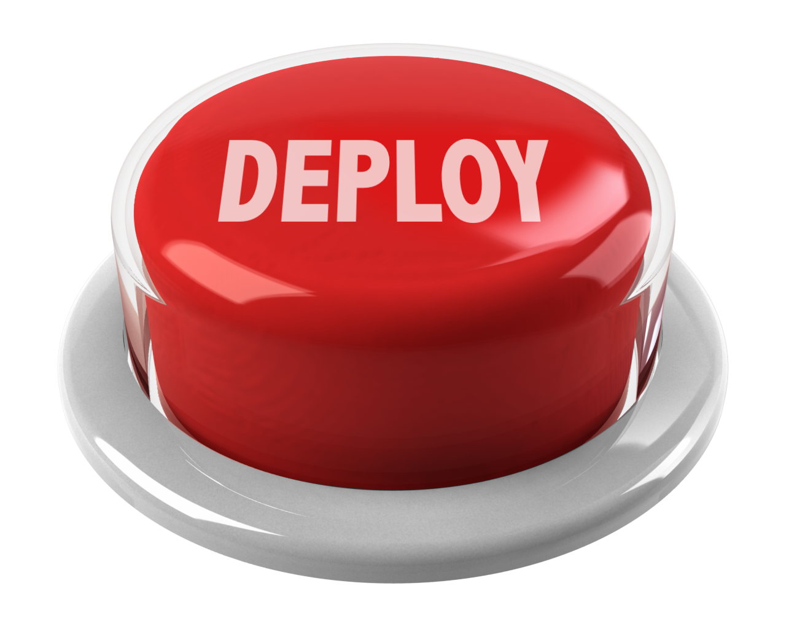
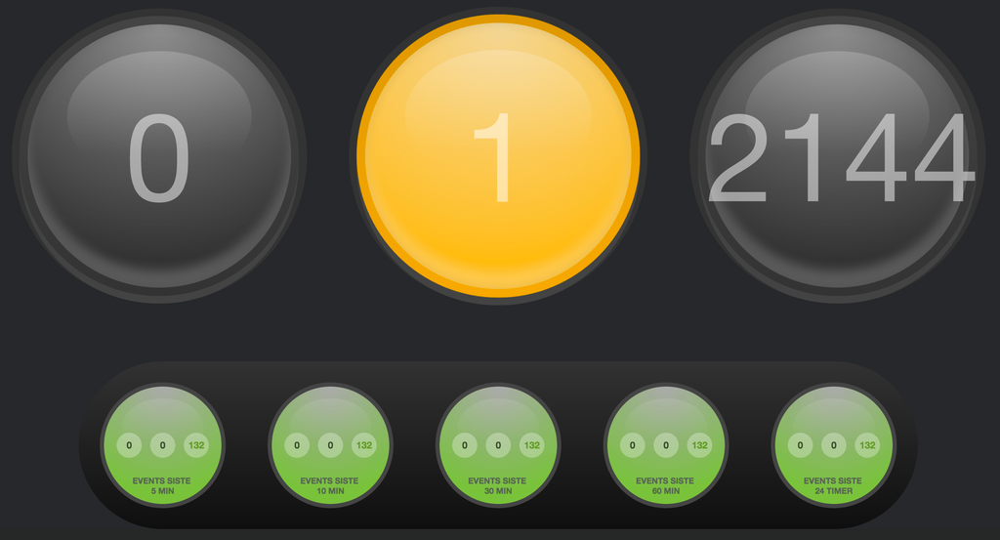

DevOps i Praksis
Scope
Modenhetsmodellen - Infrastruktur som kode
- One-click deploy
- Monitorering
1. Infrastruktur som kode
Hva er infrastruktur som kode?
- Automatisert oppsett av servere
- Konfigurasjon som kode
Eksempler
- Lag brukere
- Installer software
- Generer og endre konfigurasjonsfiler
- Start/stopp/restart prosesser
- Sett opp avhengigheter mellom operasjoner
Deskriptivt (lag en oppskrift)
#!/bin/bash
if $( command -v vim >/dev/null 2>&1 ); then
echo "vim is already installed."
else
apt-get install vim
fi
if $( grep -Fxq "filetype indent off" /etc/vim/vimrc ); then
echo "set filetype indent off is already in /etc/vim/vimrc."
else
echo "filetype indent off" >> /etc/vim/vimrc
# TODO: Do not continue if this fails.
fi
# TODO: Rollback if something fails.
Deklarativt (beskriv tilstand)
- name: ensure installed vim
apt: pkg=vim state=installed
- name: set filetype indent off for vim
lineinfile:
dest=/etc/vim/vimrc
line='filetype indent off'
state=present
Pros
- I kildekodekontroll.
- Færre forskjeller mellom servere.
- Selvdokumenterende (det er kode!).
- Refactoring.
- Deterministisk.
- Unngår manuelle steg.
- Raskt og lett å konfigurere opp et nytt miljø.
- Lettere å teste serveroppsett.
Cons
- Uvant for "old school" driftere.
- Drift er uvant for utviklere.
- Oppstartskost.
- Kompetansebygging
- Migrering
Bring up the boxes
vagrant up
Oppgaven
- En appbruker 'devops', med:
- Home directory: /home/devops
- ssh-nøkkel
- En PostgresSQL database.
- Nginx som reverse proxy.
- Init-script installert som en service.
- Deploy en applikasjon som bruker den provisjonerte infrastrukturen.
Facts
- Ansible henter “facts” om boksene.
- Disse kan aksesseres i Playbooks og i templates.
ansible -m setup app1.local
Layout
├── ansible.cfg
├── hosts
├── site.yml
├── group_vars
│ └── <group name>
├── host_vars
│ └── <host name>
├── roles
│ ├── <role>
│ │ ├── files
│ │ └── <file>
│ │ └── templates
│ │ └── <template>.j2
│ │ ├── handlers
│ │ │ └── main.yml
│ │ ├── tasks
│ │ │ └── main.yml
Arkitekturen
Provisjoner!
ansible-playbook site.yml --skip-tags deploy,post_deploy,rollback
2. One-click deploy
Må være nedetidsfritt!


Deploy!
ansible-playbook site.yml --tags deploy,post_deploy,nginx_config --skip-tags rollback
Hva har vi gjort?
- Installert software
- Manipulert filer
- Laget en bruker og satt opp ssh-nøkkel
- Installert en database og lagt til en databasebruker
- Deployet en applikasjon til to appservere og installert den som en service
- Migrert databaseskjemaet og hentet data fra databasen gjennom applikasjonen
- Satt opp en reverse proxy for automatsk failover mellom de to appserverene
Cloud og virtuelle maskiner
- Golden images (el. containers)
- Provisjonering av resten
- Konfigurasjonsendringer
- Deploy
Vi tar en titt på Digipost CloudStack og Terraform.
3. Monitorering
Vi tar en titt på Digipost Monitorering.
Real developers carry beepers
Vi trigger et problem og tar en titt på PagerDuty og Slack ("ChatOps").
Takk for meg!